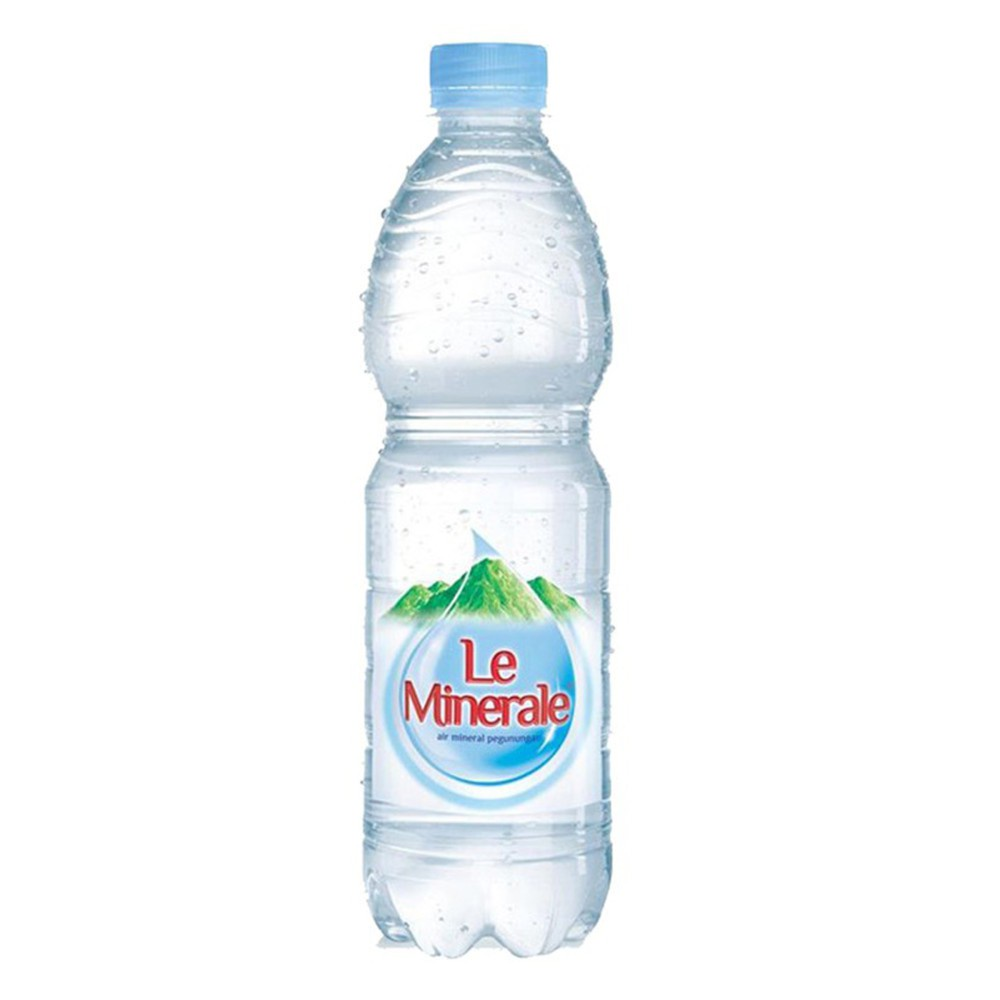

Daftar Menu Minuman
| Nama | Gambar | Deskripsi | Harga |
|---|---|---|---|
| Mineral Water |  |
Le Minerale adalah merek air minum dalam kemasan (AMDK) berkualitas di Indonesia. Air mineral ini diproses langsung dari sumber mata air pegunungan vulkanik terpilih pada kedalaman 100 meter di bawah tanah. | RP. 5.000 |
| Ice Tea | Es teh adalah minuman berbahan dasar seduhan daun teh yang disajikan dingin dengan tambahan es batu. | RP. 5.000 | |
| Lemon Tea | Lemon tea adalah minuman populer yang terbuat dari campuran seduhan teh (biasanya teh hitam atau teh hijau) dengan perasan air jeruk lemon segar. | RP. 7.000 | |
| Orange Juice |  |
Jus jeruk adalah minuman sari buah yang diperoleh dengan cara memeras atau mengekstrak daging buah jeruk segar (seperti jenis Valencia, Navel, atau Mandarin). | RP. 10.000 |